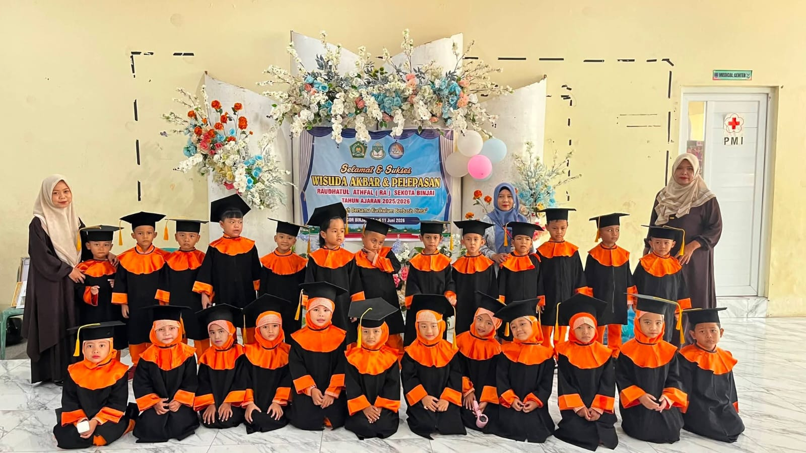
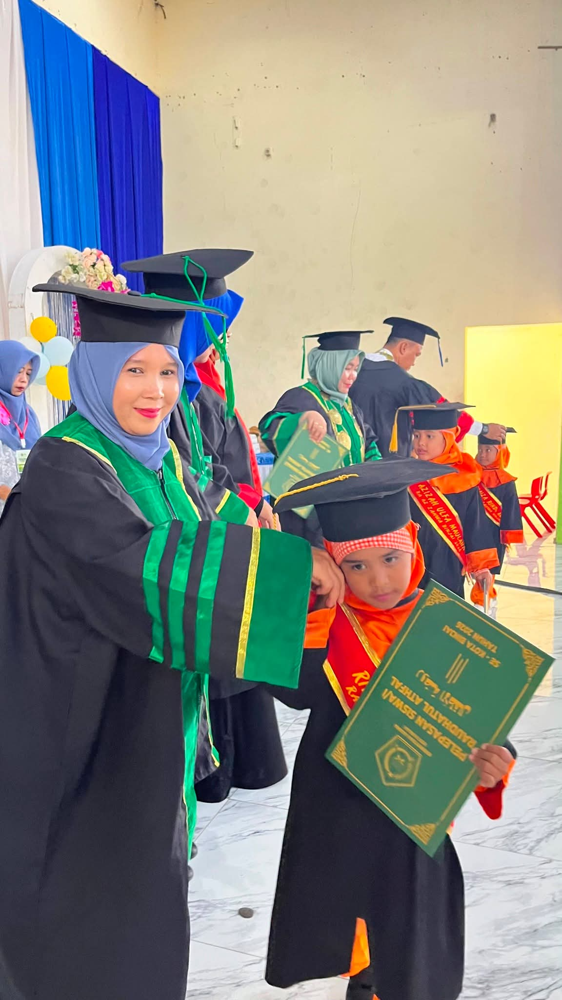
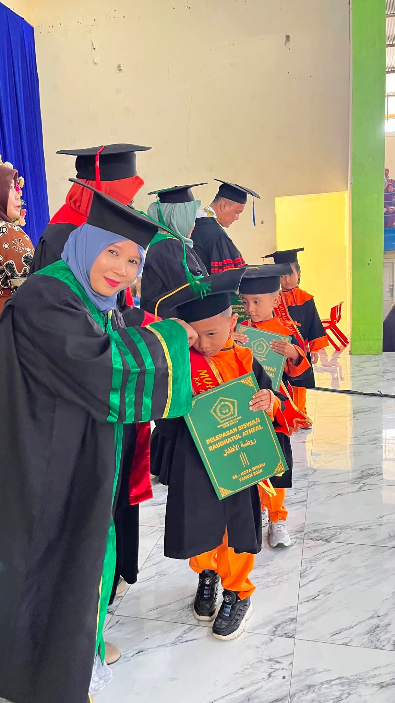
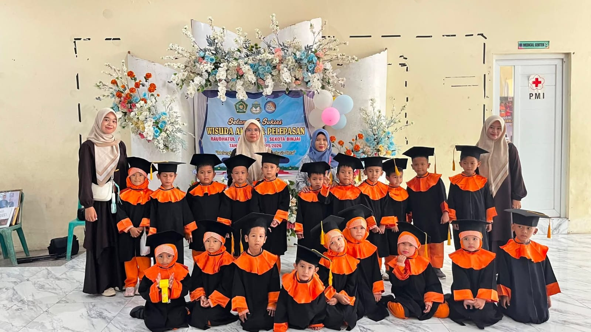
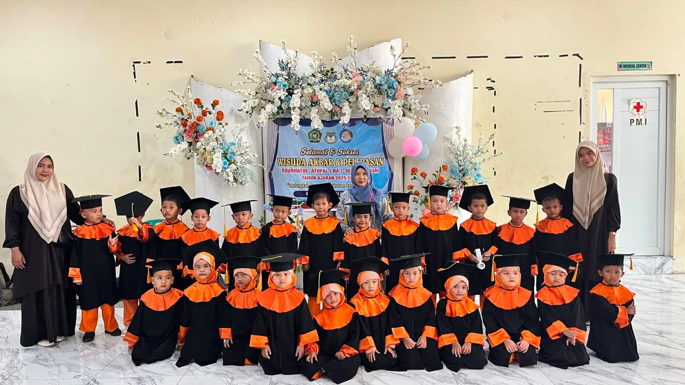

10 Juni 2026
Admin RA AZ ZAHWA BINJAI

BINJAI – Suasana bercampur bangga menyelimuti acara Pelepasan dan
Wisuda Siswa-siswi RA AZ ZAHWA BINJAI. Acara yang digelar dengan
penuh warna ini menandai keberhasilan para murid dalam
menyelesaikan pendidikan anak usia dini sebelum melanjutkan ke
jenjang Sekolah Dasar (SD).
Pada hari Rabu, 10 Juni 2026, siswa-siswi RA AZ ZAHWA BINJAI
melaksanakan wisuda di Gedung Olahraga (GOR) Binjai. Sejak pagi,
area acara sudah dipadati oleh para orang tua yang antusias
menyaksikan putra-putri mereka mengenakan toga mini lengkap
dengan samir wisuda.
Kemeriahan acara dibuka dengan penampilan tari tradisional Melayu,
disusul lantunan ayat suci Al-Qur'an dan hafalan surah-surah
pendek oleh para wisudawan.
Kepala RA AZ ZAHWA BINJAI, Ibu Ruziah Aini, S.Sos.I, S.Pd.I,
S.Pd., dalam sambutannya menyampaikan rasa terima kasih kepada
seluruh orang tua yang telah mempercayakan pendidikan anak-anak
mereka kepada RA AZ ZAHWA BINJAI.




Tidak hanya prosesi pemindahan kuncir toga, pihak sekolah juga
memberikan penghargaan kepada siswa-siswi yang meraih predikat
Tahfiz Cilik dan siswa paling mandiri selama tahun ajaran
berlangsung. Momen paling mengharukan terjadi ketika para wisudawan membawa
setangkai bunga dan melakukan sungkeman kepada orang tua masing-
masing sebagai bentuk rasa hormat dan terima kasih. Isak tangis
bahagia pun tidak terbendung dari para orang tua yang hadir.
Acara ditutup dengan doa bersama untuk keselamatan dan kesuksesan
anak-anak dalam menempuh jenjang pendidikan berikutnya, serta
sesi foto bersama antara siswa, guru, dan orang tua.